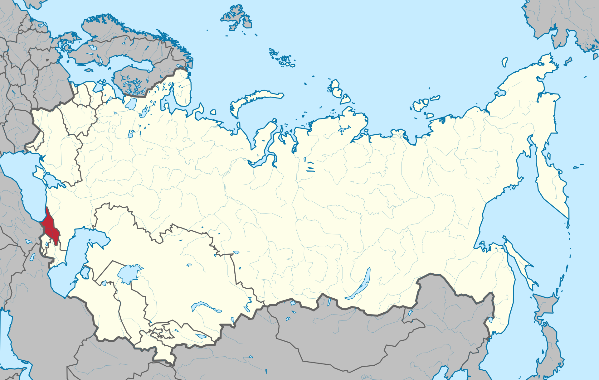

ENGLISH РУССКИЙ
ENGLISH РУССКИЙ
ENGLISH РУССКИЙ
ENGLISH РУССКИЙ
ENGLISH РУССКИЙ
ENGLISH РУССКИЙ
GSPC
In 1921-1936, the Socialist Soviet Republic of Georgia was officially named. It was formed on February 25, 1921. From March 12, 1922 to December 5, 1936, it was part of the Transcaucasian Socialist Federative Soviet Republic. The only and ruling party is the Communist Party of Georgia.
The Georgian Soviet Socialist Republic was located in the northwestern part of the Caucasus. The neighboring republics were: the RSFSR in the north, in the east and southeast the Azerbaijan Soviet Socialist Republic, in the south the Armenian Soviet Socialist Republic. The republic also had a site bordering Turkey.
On November 14, 1990, the Supreme Soviet of the Georgian SSR announced a transition period until the restoration of the independent Georgian Democratic Republic and, in this regard, renamed the republic into the Republic of Georgia. On March 31, 1991, a referendum was held on the restoration of Georgia's state independence, and as a result, on April 9, 1991, the Supreme Soviet of Georgia, headed by Zviad Gamsakhurdia, declared independence from the USSR. However, before the collapse of the USSR, Georgia (like other republics, with the exception of the Baltic ones) was not recognized by the international community as an independent state and formally continued to remain part of the Soviet Union until December 26, 1991.
Map of the Georgian SSR from December 5, 1936 - April 9, 1991
[BACK TO HOME] [BACK TO REPUBLICS]